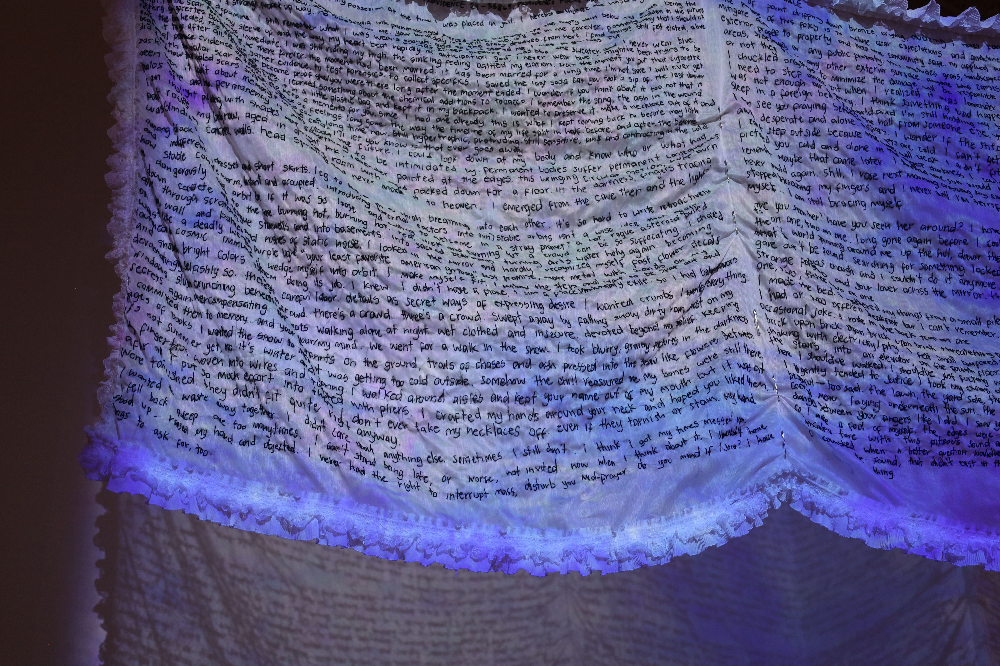

The idea for The Whale was born out of my battle jacket. I started my battle jacket in 2022– a battle jacket is common in queer and punk communities. They usually show off your music taste, political alignments, pretty much anything you are interested in. I became familiar with embroidery as the construction of identity, as the stitching together of distinct pieces into a cohesive piece of attire, one that you can wear so people know exactly who you are without having to speak.
I was at a loss for what to do for my degree project, so I worked backwards. What kind of work did I want to have displayed at a final show? I wanted something huge, something theatrical, something vulnerable and personal to me that felt good to make. I’ve always been so moved by intense performance artworks. That would be deeply satisfying to have sitting at a gallery, a representation of everything I’ve thought about this year. So I picked up a 5 yard ream of delicate translucent fabric and began embroidering.
The embroidery itself took about four months and would’ve been denser and longer had time permitted. I embroidered every day for at least an hour, up to ten hours on weekends. It was ceaseless and violent, stabbing a needle into this soft fabric thousands upon thousands of times. Each individual letter required at least one stitch (i, L), up to five or six for the more complicated letters (R, Y, S, G, B, etc). I found it interesting how I began to associate each letter with their respective stitch placements and embroidery gestures.
I went into this project thinking about devotion and obsession. “I will stitch every single word onto this piece of fabric, painstakingly, for months, for you.” I can’t for the life of me remember who said to me that talking is too easy, that words are so violent and they shouldn’t be so easy to say. That if you want to say something out loud you should be willing to embroider it, and if it’s not worth embroidering then it’s not worth saying out loud. It’s not a sentiment I necessarily agree with, but it’s something I’ve been thinking about a lot. The effort that this embroidery required highlights the importance of these words, if I was willing to go through so much time and trouble to externalize them.
At the beginning of month 4 of embroidery, my back began to spasm due to the amount of time I’d been spending hunched over the fabric. It was sudden onset and I became completely incapacitated only 3 weeks before the day we were supposed to install. I was curled up on the floor screaming, in the throes of the worst pain I’ve ever felt in my entire life. Yet, I still think every second of it was worth it. I considered the possibility of physical injury when I began such an intense project and ended up concluding that I think it would add to the final piece. Funny how that worked out. I took a week off of embroidering to rest my back. I was in acute spasm for only one day, but remained unable to walk without assistance for the next few days. Eventually after daily stretches and massages, long hot showers, a ton of Advil, consistent, unruly slathering of bengay, a bunch of magnesium supplements and a lot of hope, I was back at it.
